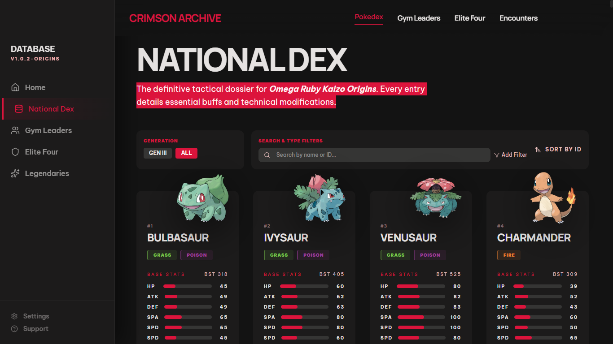
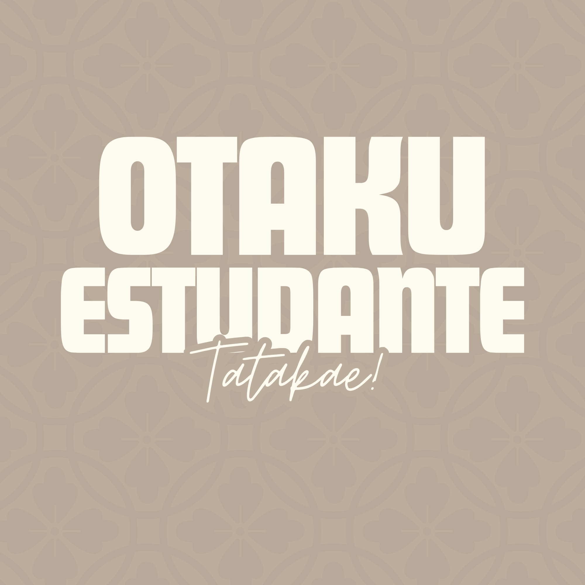

Recent Projects

Omega Ruby Kaizo Wiki
A wiki for ORK, my Pokémon Ruby mod, with concise guides and documentation.

Otaku Estudante
A web platform for sharing anime reviews and recommendations, created by students for students.

FAB website Rebranding
A compact UX/UI case study redesigning the Brazilian Air Force recruitment flow.